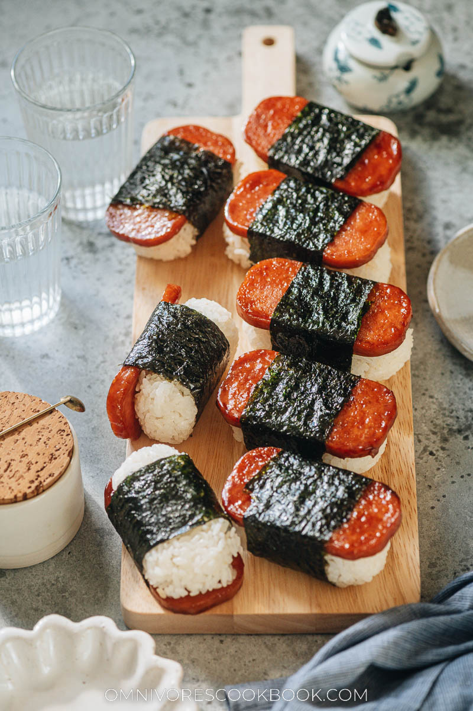

Spam Musubi

Description
This recipe will teach you how to make a popular dish from
Hawaii. Spam musubi is simple and easy dish made from common
ingredients in a Hawaiian household.
While spam may not be so often used here in the mainland
it is a popular ingredient used in many places in the pacific
islands like the Phillipines.
Ingredients
- Spam
- Oyster Sauce
- Soy sauce
- Sugar
- Nori
- Sushi Rice
Steps
- Slice the spam into 8-10 pieces and put in ziploc bag
- Mix oyster sauce, soy sauce, and sugar until sugar is dissolved
and add into the bag
- Drain off the marinade and fry the spam
- Place a strip of nori on cutting board and put musubi mold
on the middle of the nori
- Add sushi rice into the mold and press down
- Remove mold and place cooked spam ontop of the rice
- Wrap the nori up from both sides and serve